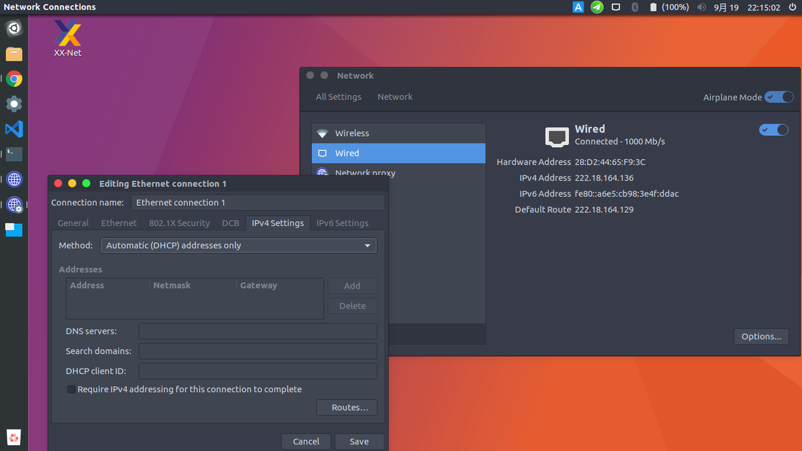
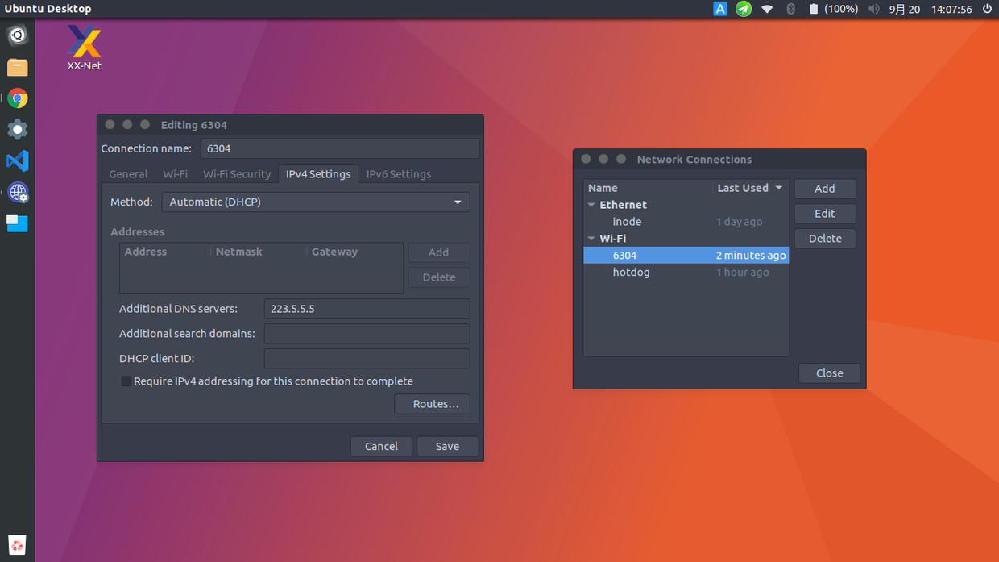

由于学校的 iNode 客户端 Linux 版太古老了，安装起来遇到各种各样的问题。所以就在
github 搜了一搜，看有没有什么开源的 iNode 的替代品。结果就让我找到了！
开源的 iNode 替代品 njit8021xclient。
按照 install.html 编译安装。
编译的时候注意第一次需要先在 njit-clinet 项目的根目录下运行命令
1 | |
然后安装说明编译安装就行了。
不同的 Linux 版本 autoreconf 可能不同，可自行搜索安装。
1 | |
网卡需要输入你电脑连上的那个网卡。有时候是无线的网卡，有时候是有线的网卡。
可能还需要设置自动获取 ip，设置方式：
打开网络连接设置。找到设置面板。然后在 IPv4 设置中选择 DHCP 模式。
如图：

1 | |
也可以直接在设置面板里面设置 dns，设置如图：

在 Additional DNS servers 后面填上 dns 地址即可。我填的的是阿里提供的 DNS 地址。